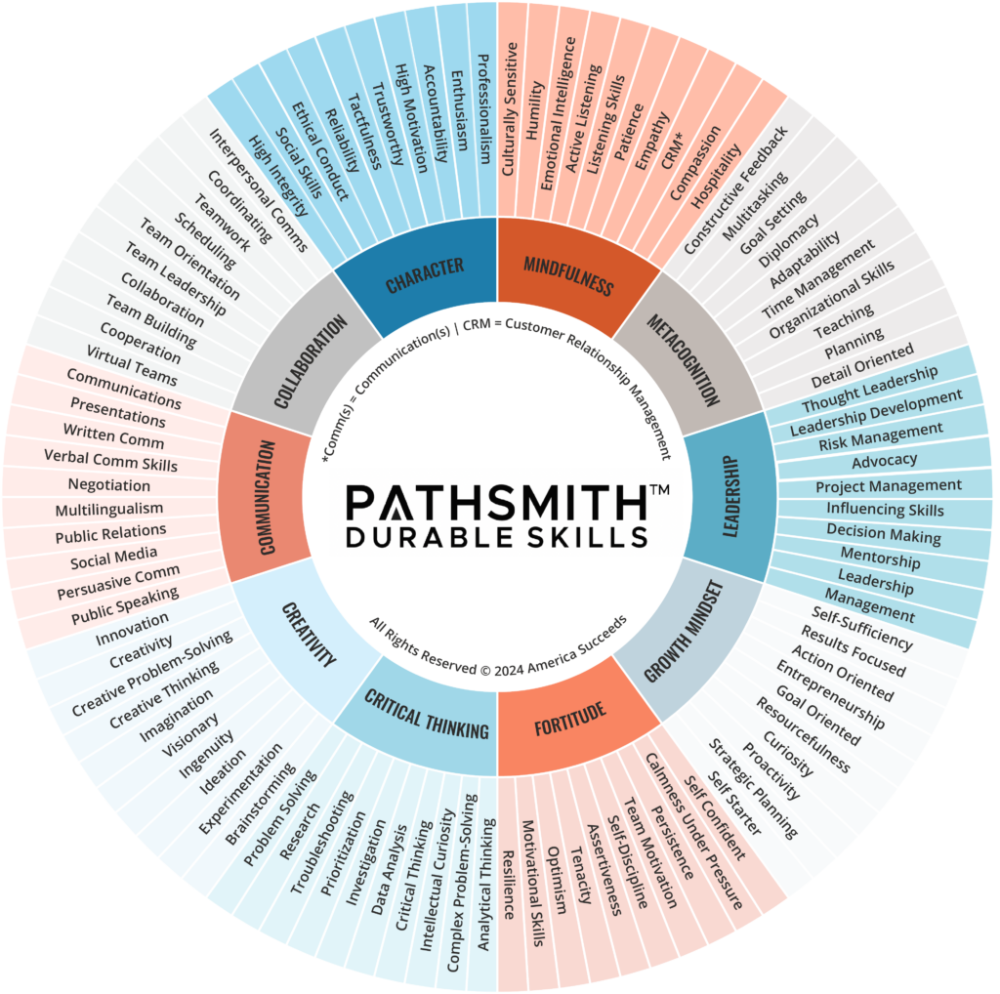

I italicized "foreseeable" because that's the big unknown. The misalignment between our education system (K-12 and higher ed) and the labor market has been a problem for decades. AI and robotics just make it more obvious and complex for anyone trying to address it.
Durable skills will sound a lot like "soft skills" or "essential skills" for anyone familiar with those terms. They're the ones most likely to still matter tomorrow.
I'll add my own take on this page, starting with information literacy, later this spring. For now, this is the foundation I'll build on. (See also: the Co-Evolution page, where cognitive offloading and metacognition show up in practice.)

- Critical Thinking / Analytical Thinking
- A CNA notices a resident's behavior change and connects it to a recent medication switch instead of assuming noncompliance.
- Communication
- A project manager translates a technical delay into plain language so a non-technical stakeholder understands the impact on their timeline.
- Creativity / Creative Problem-Solving
- A teacher redesigns a lesson on the fly when the technology fails, using a whiteboard and group discussion to hit the same learning objective.
- Collaboration / Teamwork
- A cross-functional team with conflicting priorities negotiates a shared deadline instead of escalating to management.
- Leadership
- A frontline worker speaks up in a meeting to flag a process problem no one else is naming, without being asked.
- Adaptability / Resilience / Flexibility
- A displaced retail worker transitions into a healthcare admin role by recognizing that her customer de-escalation skills transfer directly.
- Growth Mindset / Curiosity / Lifelong Learning
- A 55-year-old office manager starts experimenting with AI tools on her own time because she wants to understand them before they're mandated.
- Metacognition / Self-Awareness
- A learner pauses mid-task and realizes they've been following a flawed process for 20 minutes, then backs up and restarts instead of pushing through.
- Emotional Intelligence / Empathy
- A supervisor notices a usually reliable team member withdrawing and checks in privately instead of writing them up for missed deadlines.
Consolidated from America Succeeds, WEF Future of Jobs 2025, and UVU Workforce Development. Other skills appearing in individual sources: fortitude, mindfulness, and character (America Succeeds); ethical judgment and integrity, digital literacy, and time management (UVU); talent management (WEF).
Note: all three sources are employer-driven. It reflects what companies say they want, not worker or educator perspectives.
Image: Pathsmith Durable Skills wheel, America Succeeds.